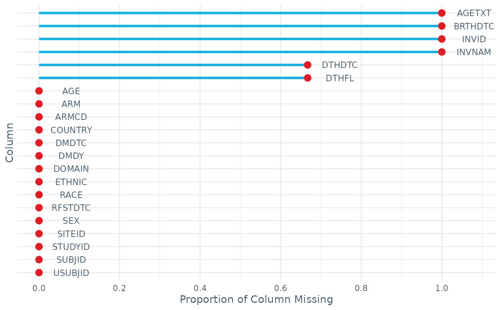
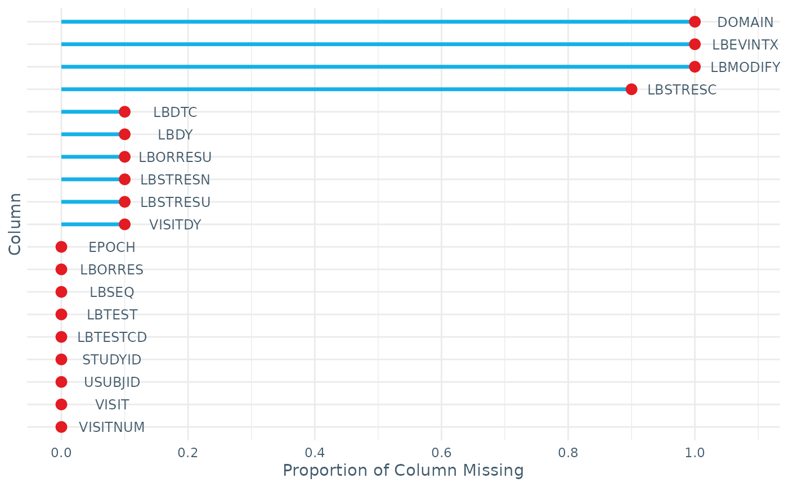

Provides a variety of checks and summaries on IDDO-SDTM data including summarising the number of rows by study ID (STUDYID), the number of participants under 6 month, 18 years and over 90 years, and the number of units used by each test (TESTCD) and study ID.
Value
A list with various summaries/checks, the number of which is dependent on what variables are present in the input data. A plot is also returned showing the missingness in each variable.
Examples
check_data(DM_RPTESTB)

#> $studyid
#> # A tibble: 1 × 2
#> STUDYID n
#> <chr> <int>
#> 1 RPTESTB 3
#>
#> $sex
#> SEX n
#> 1 F 2
#> 2 M 1
#> 3 <NA> 0
#>
#> $age
#> # A tibble: 1 × 7
#> n_USUBJID AGE_min AGE_max n_missing_AGE n_AGE_under_6M n_AGE_under_18Y
#> <int> <dbl> <dbl> <int> <int> <int>
#> 1 3 4 67 0 0 1
#> # ℹ 1 more variable: n_AGE_over_90Y <int>
#>
#> $missingness
#> STUDYID DOMAIN USUBJID SUBJID RFSTDTC DTHDTC DTHFL SITEID INVID INVNAM
#> 0.000 0.000 0.000 0.000 0.000 0.667 0.667 0.000 1.000 1.000
#> BRTHDTC AGE AGETXT SEX RACE ETHNIC ARMCD ARM COUNTRY DMDTC
#> 1.000 0.000 1.000 0.000 0.000 0.000 0.000 0.000 0.000 0.000
#> DMDY
#> 0.000
#>
check_data(LB_RPTESTB)

#> $studyid
#> # A tibble: 1 × 2
#> STUDYID n
#> <chr> <int>
#> 1 RPTESTB 10
#>
#> $testcd
#> # A tibble: 3 × 17
#> STUDYID TESTCD min q5 q25 q50 q75 q95 max n_UNITS UNITS n_LOC
#> <chr> <chr> <dbl> <dbl> <dbl> <dbl> <dbl> <dbl> <dbl> <int> <chr> <int>
#> 1 RPTESTB HCG NA NA NA NA NA NA NA 0 "" 0
#> 2 RPTESTB HGB 88 89.8 95.8 98.5 100. 102. 102 1 "g/L" 0
#> 3 RPTESTB PLAT 90 91 95 100 140. 173. 181 1 "10^9/… 0
#> # ℹ 5 more variables: LOC <chr>, n_METHOD <int>, METHOD <chr>, n_SPEC <int>,
#> # SPEC <chr>
#>
#> $missingness
#> STUDYID DOMAIN USUBJID LBSEQ LBTESTCD LBTEST LBORRES LBMODIFY
#> 0.0 1.0 0.0 0.0 0.0 0.0 0.0 1.0
#> LBORRESU LBSTRESC LBSTRESN LBSTRESU VISITNUM VISIT VISITDY EPOCH
#> 0.1 0.9 0.1 0.1 0.0 0.0 0.1 0.0
#> LBDTC LBDY LBEVINTX
#> 0.1 0.1 1.0
#>